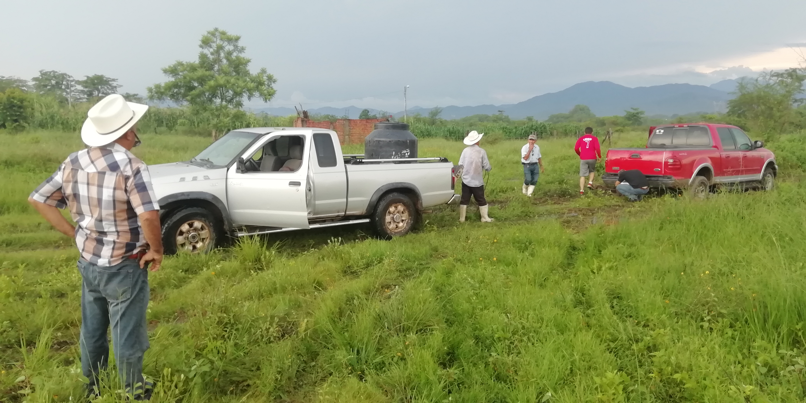

⬇️ Ir para o fim
🌱"Agro forte, futuro sustentável: equilíbrio entre produção e meio ambiente"
Uma ponte entre a produção e o consumo - do campo ou da cidade com inovação e responsabilidade
Meu nome é Antonio
